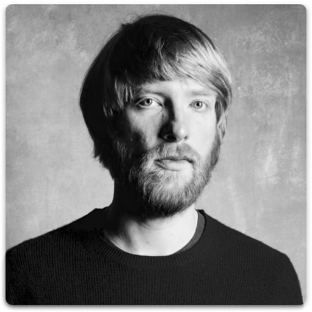

“I love to meet new people, they share their fascinating stories and ideas. After meeting someone new I get a lot of inspiration. I feel there should be an app for a casual meeting with strangers.”
Age: 28
Occupation: Writer ･ Editor
Family: Divorced
Location: Beijing · China
Archetype: The Creator
Bio
Alex is a part-time editor for a lifestyle magazine in Beijing. He came with his Chinese wife and stayed after the divorce. Alex loves new places, he often visits bars and restaurants that just opened in the city. In his free time, he is writing a post-apocalyptic science fiction book.
Goals · Interest
Find new friends in a foreign city.
Alex is not interested in new relationships, because not long ago he went through a divorce.
He is also not that much interested in a hook-up with some stranger.
Alex is looking to meet someone just for fun, to go to cinema or go for a lunch, talk, travel.
Alex also travels a lot, but usually alone and rarely meets new friends because he is a little shy to approach people.
Pain Points · Concerns
Dating apps that Alex tried doesn’t have the right people.
Some online websites that are used to find a relationship are also not suitable for him..
Even when he found some interesting people online it took him weeks in chatting before he actually met them in person.
When Alex travelled to Cambodia last time, he tried some solo travelling apps, he posted some messages and liked some profiles but people answered when he already left the country.
Scenario
After my divorce I felt very lonely because a lot of our friends in Beijing were from my wife’s side. I ended up in a foreign country with almost no friends. At first I only spent time with my colleagues, but a little after I started to look for an app that can help me find new buddies to hang out.
Motivations

Personality
Introvert
Extrovert
Analytical
Creative
Loyal
Fickle
Passive
Active
Brandsy